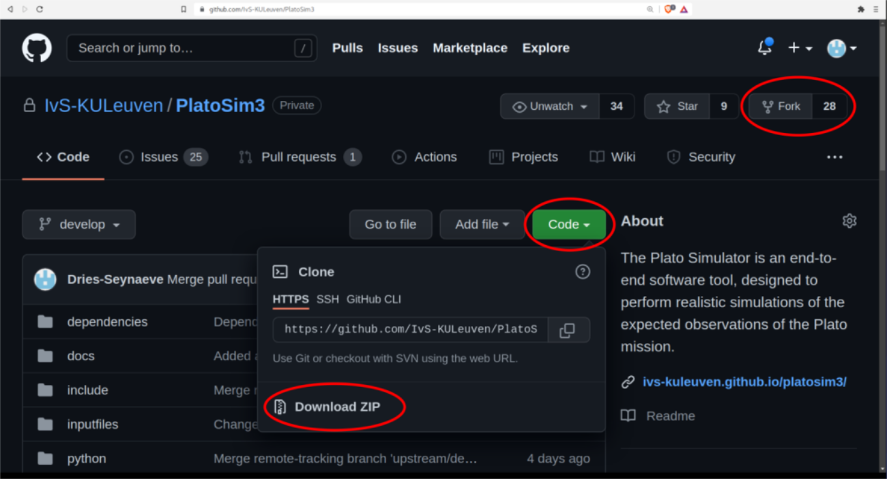

|
PLATO Simulator
3.0
An end-to-end simulator for the Plato mission.
|
|
PLATO Simulator
3.0
An end-to-end simulator for the Plato mission.
|
The Plato Simulator is an end-to-end software tool, designed to perform realistic simulations of the expected observations of the Plato mission. It can, however, easily be adapted to similar types of missions.
Our simulator models and simulates time series of CCD images by including models of the CCD and its electronics, the telescope optics, the stellar field, the jitter movements of the spacecraft, and all important natural sources of noise.
Many aspects concerning the design trade-off of a space-based instrument and its performance can best be tackled through realistic simulations of the expected observations. The complex interplay of various noise sources in the course of the observations make such simulations an indispensable part of the assessment and design study of any space-based mission.
The PlatoSim3 software is being distributed via GitHub (see screenshot below).
If you are interested in contributing to the software, you must fork PlatoSim3. If you are only interested in using it, it suffices to download the ZIP-file. At a later stage, releases will be distributed.

After you have downloaded the Plato Simulator code, you must first take care of the dependencies before you can actually build and run the Plato Simulator. The next sub-sections describe the requirements and the procedures to install the dependencies and to build the Plato Simulator code.
To be able to install the dependencies and build the code, the following software must be installed on your computer:
Everything concerning the dependencies for PlatoSim3 can be found in the /dependencies directory. The /dependencyDownloads contains the tarball or zipball file of all required packages. In the /installscripts sub-directory you can find Python scripts that help you to unzip or untar these files into the /dependencyInstalls directory. You can do this for one dependency at a time, like this:
Alternatively, you can also install the required dependencies and build the code in one go by typing:
The first time you want to run the Plato Simulator or each time you changed something in the code, the software must be built again. Just cd to the /build directory (the first time you will have to create this directory yourself) and type the following commands:
This will create two executables :
platosim to run simulations (see below)testplatosim to run the test harnesses (without arguments).PlatoSim3 writes its output to an HDF5 file. HDF stands for Hierarchical Data Format, and is a next generation file format that was specifically designed to store and organise large amounts of data.
HDF5 behaves much likes a Unix-like folder structure, but where folders are called groups. Each group can contain other groups, array datasets, and scalar attributes. For example, the first subfield image is located in /Images/image000000 in the HDF5 file.
To quickly list the contents of the group structure of an HDF5 file on the command line, make sure that your PATH environment variable includes dependencies/Installs/hdf5-1.8.16/bin/, so that you can execute
or e.g.
For Python users, we provided a simfile.py module in the /python folder, with convenient tools to extract and plot the Simulator output. For example, one can plot a subfield image using
The top of simfile.py contains documentation with several examples.
You can also access the HDF5 file using the pytables module. For example (using the latest version of PyTables):
IDL user can access the HDF5 file using, for example,
After the installation of the software, the Plato Simulator can be run from the /build directory you have created. For the simulation itself, only one input file with configuration parameters (e.g. /inputfiles/inputfile.xml) is required as input.
To initiate a simulation, cd to the /build directory and type:
The structure of the input file and the meaning of the individual configuration parameters are described in a separate document: Description of the input file
We kindly ask you to refer to this work in any publication the Plato Simulator software contributes to.
 1.8.10
1.8.10